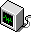

|

Assessments of Information Productivity®, Information Technology, and Knowledge Capital®
|
Consulting Services
|
| Information Productivity® |
High Productivity Firms |
Knowledge Capital® | |
|---|---|---|---|
| Analysis | Top Rankings | Top Rankings | |
| Analysis | Top Rankings | Top Rankings | |
| Analysis | Top Rankings | Top Rankings |
Click here for Paul Strassmann's biography.
© 1999 Copyright Strassmann, Inc. All Rights Reserved.
Please send feedback to
webmaster@strassmann.com